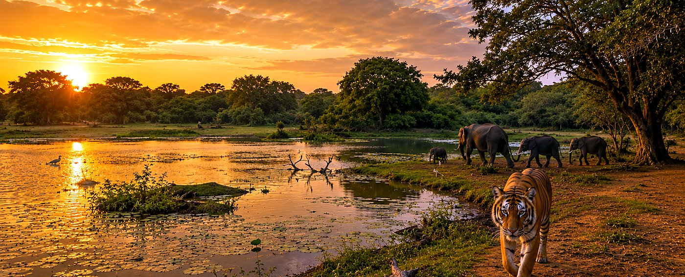
Fauna selvatica
Safari a Kumana
Un safari in jeep di mezza giornata — elefanti, leopardi e migliaia di uccelli su 35.000 ettari.

Tra le dieci migliori destinazioni surf al mondo, Arugam Bay è molto più delle sue onde — una costa orientale selvaggia fatta di spiagge deserte, lagune ricche di fauna, templi antichi e parchi nazionali punteggiati di elefanti. Ecco come riempire le ore tra una sessione e l'altra.
Sulla costa orientale dello Sri Lanka, Arugam Bay è un autentico paradiso tropicale — le migliori condizioni per il surf, spiagge di sabbia bianca pulita, tramonti cremisi e una cultura calorosa e accogliente. Ciò che la rende speciale è la varietà: una decina di spot di surf a meno di 30 minuti di tuk-tuk, e altrettante avventure nell'entroterra e lungo la costa.
Da giugno a ottobre è alta stagione, quando le onde danno il meglio e la baia si anima. Ti aiutiamo a organizzare ogni escursione — basta chiedere al camp.

Dai safari all'alba alle camminate al tramonto — alcuni dei nostri modi preferiti di esplorare. Tutti prenotabili in loco tramite il camp.

Un safari in jeep di mezza giornata — elefanti, leopardi e migliaia di uccelli su 35.000 ettari.
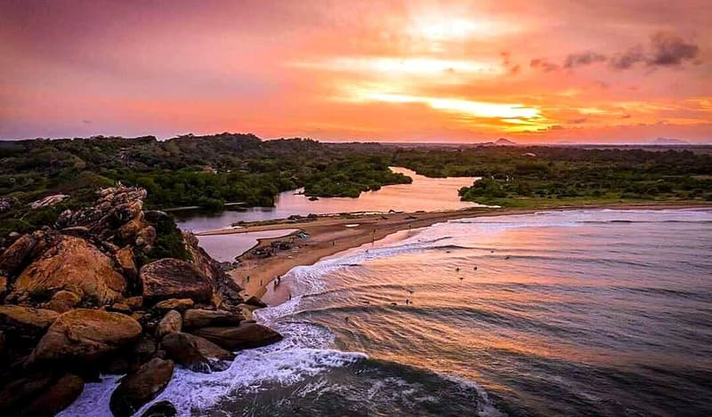
Una breve salita verso le più belle viste all'alba e al tramonto di tutta la baia.
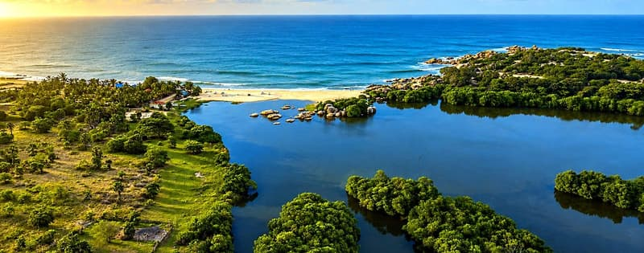
In canoa tra le mangrovie per avvistare coccodrilli, varani e una ricca avifauna.
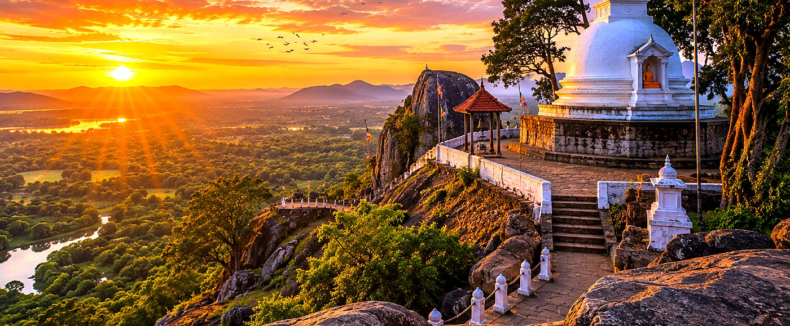
Un monastero nella foresta con grotte, sentieri e ampie vedute sulla costa dalla vetta.
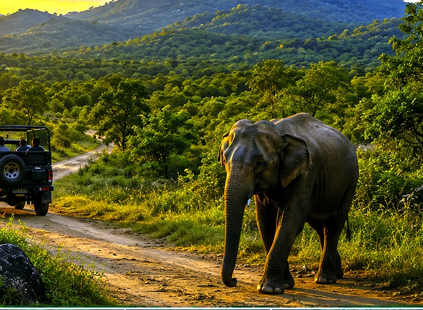
Un piccolo santuario degli elefanti — un branco di 150 esemplari si raduna alla pozza al tramonto.
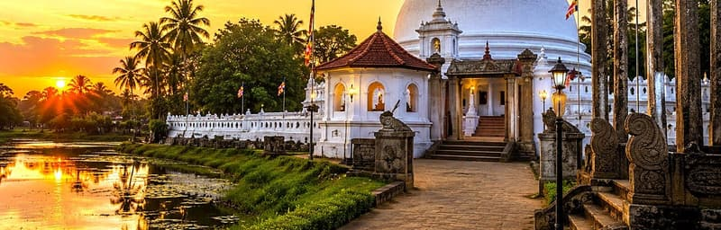
Un tempio in riva al mare vecchio di 2.000 anni, fatto di antichi stupa e statue, magico nell'ora dorata.
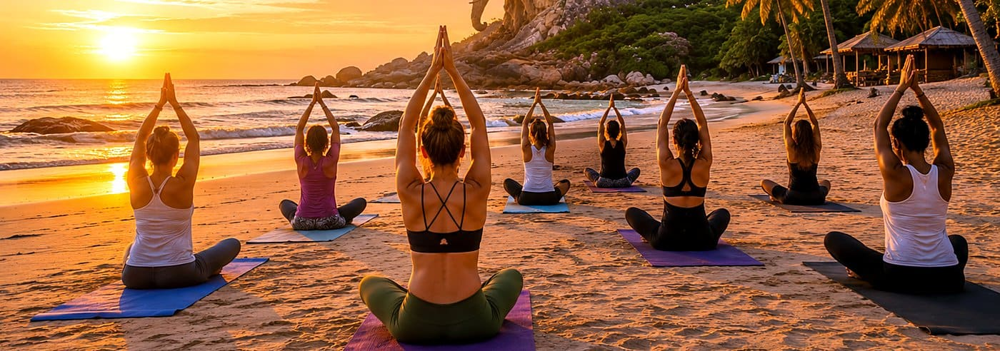
Yoga all'alba, ayurveda e sound healing — scopri il nostro menu benessere completo.
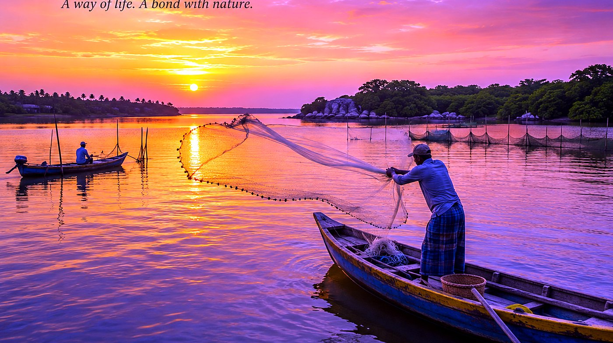
Unisciti ai pescatori locali sulla laguna per uno scorcio rilassato e suggestivo dei metodi tradizionali.
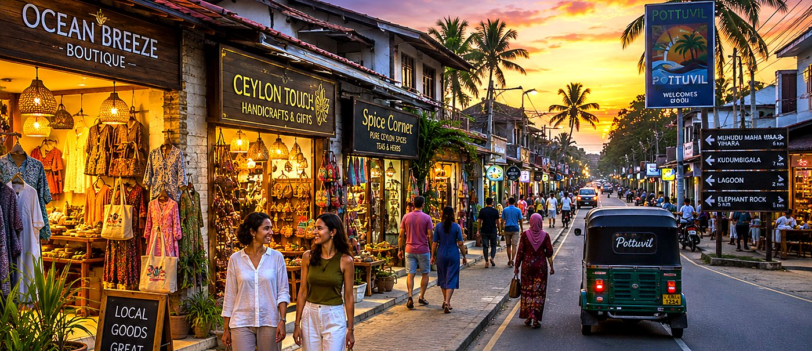
Souvenir, abbigliamento personalizzato di Arugam Bay e ottimi affari lungo la vivace via principale.
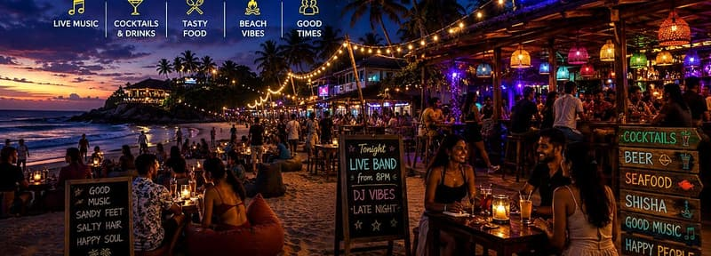
Beach bar, buffet, falò e il pesce più fresco servito fino a tarda notte.
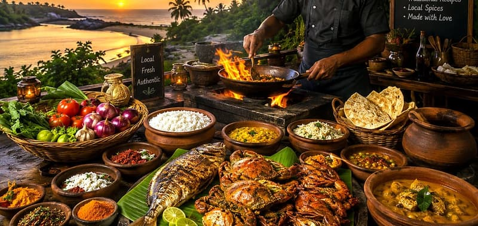
Riso & curry dello Sri Lanka, hopper e pesce fresco — preparati con amore.
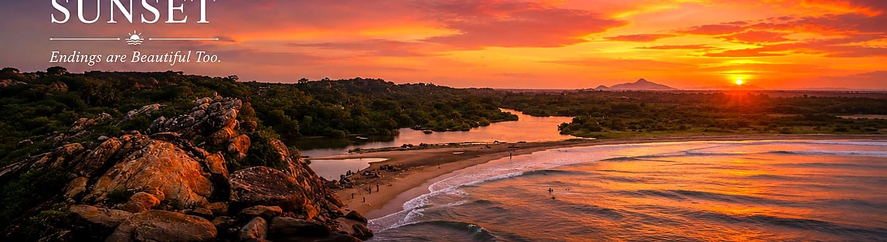
Albe della costa orientale che sorgono dal mare, e tramonti sulla spiaggia indimenticabili.

Trovandosi su una baia della costa orientale, vedere il sole sorgere direttamente dall'oceano non è solo facile — è magnifico. Vai in spiaggia poco prima dell'alba per trovare il tuo posto, e chiudi la giornata con la luce dorata da Elephant Rock. Le cornici perfette per una giornata in paradiso.
 La tua avventura ti aspetta
La tua avventura ti aspetta
Soggiorna con noi e organizzeremo ogni safari, gita in laguna ed escursione — così a te non resta che goderti la costa orientale selvaggia.